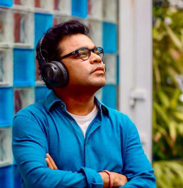

The Mozart of Madras • Two-Time Academy Award Winner
Allah Rakha Rahman, popularly known as A.R. Rahman, was born on January 6, 1967, in Chennai, India. He is one of the world's most celebrated music composers, known for his innovative fusion of Indian classical music with electronic sounds, world music, and traditional orchestral arrangements.
Rahman's journey in music began at a very young age. He started playing the keyboard at the age of 11 and became a full-time musician by the age of 16. His breakthrough came with the 1992 Tamil film "Roja," which won him the National Film Award for Best Music Direction, making him the youngest recipient of this prestigious award.
What sets Rahman apart is his ability to seamlessly blend diverse musical traditions. His compositions incorporate elements of Carnatic music, Hindustani classical, Western classical, electronic music, and various world music genres, creating a unique sound that resonates globally.
Rahman's career spans over three decades, during which he has composed music for more than 150 films in multiple languages including Tamil, Hindi, Telugu, Malayalam, Kannada, and English. His work has transcended geographical and cultural boundaries, earning him recognition on the global stage.
Some of his most iconic works include the soundtracks for "Roja," "Bombay," "Dil Se," "Lagaan," "Rang De Basanti," "Guru," "Jodhaa Akbar," and the internationally acclaimed "Slumdog Millionaire," which brought him worldwide fame and two Academy Awards.
Beyond film music, Rahman has also released several independent albums and collaborated with international artists like Michael Jackson, Mick Jagger, and will.i.am. He founded the KM Music Conservatory in Chennai to nurture young musical talent.
Rahman's music is characterized by its spiritual depth, emotional resonance, and technical innovation. He was one of the first Indian composers to extensively use digital sampling and synthesizers, revolutionizing the sound of Indian film music.
His compositions often feature complex arrangements, layered harmonies, and a perfect balance between traditional Indian instruments and modern electronic sounds. Rahman's ability to create memorable melodies that stay with listeners long after they've heard them is one of his greatest strengths.
He is also known for his spiritual approach to music, often incorporating Sufi and devotional elements into his compositions. This spiritual dimension adds depth and universality to his work, making it accessible to audiences across cultures and religions.
A.R. Rahman's impact on global music cannot be overstated. He has been instrumental in bringing Indian music to international audiences, breaking down cultural barriers and creating a new genre of world music that combines the best of East and West.
His work on "Slumdog Millionaire" (2008) won him two Academy Awards (Best Original Score and Best Original Song for "Jai Ho"), two Grammy Awards, a BAFTA Award, and a Golden Globe. This made him the first Indian to win multiple Academy Awards in a single year.
Rahman's influence extends beyond awards. He has inspired countless musicians worldwide and has been a cultural ambassador for India, showcasing the richness and diversity of Indian music on the global stage.